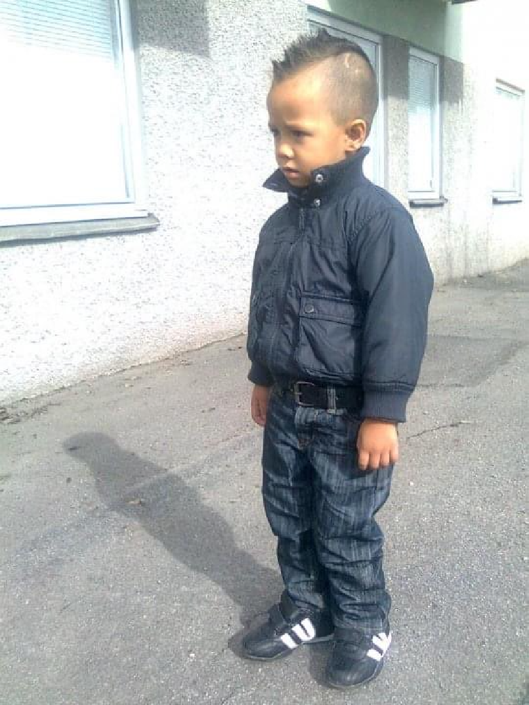
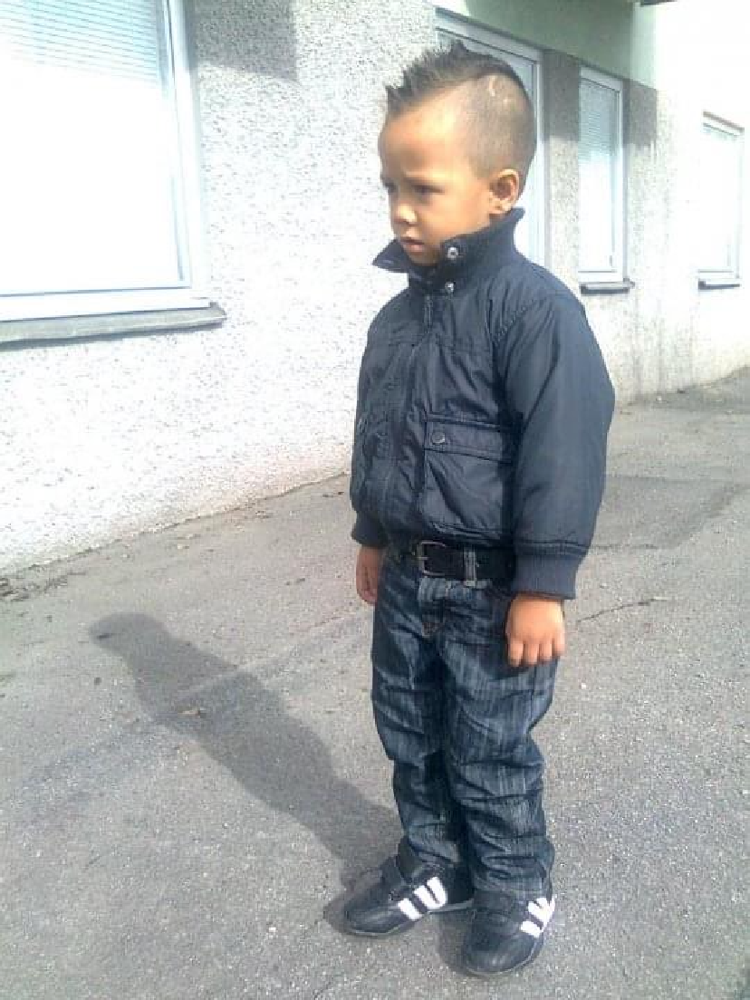

Bilder

 

Bakgrund
Hej, Jag heter Kevin Voittonen, Jag studerar på NTI Gymnasiet i Södertälje
Intressen
Jag tycker om att arbeta inom teknik och gillar att vara kreativ, ibland inte. När jag inte arbetar med teknik, tycker jag om att utforska nya platser, läsa böcker , lyssna på musik och spela spel. Min passion för teknik kommer från min tanke att förstå hur saker fungerar och använda det för att lösa problem.
Tankar om framtiden
Mina favorit låtar
- Windowpane (Opeth)
- I THINK (Tyler, The Creator)
- Show Me How (Men I Trust)
- Creep (RadioHead)
- One Beer(MF DOOM)
En bonus låt gjord av min farbror
- Betrayed (Faceshift)
Tack för att du besöker min sida, jag hoppas du hittar något intressant här.